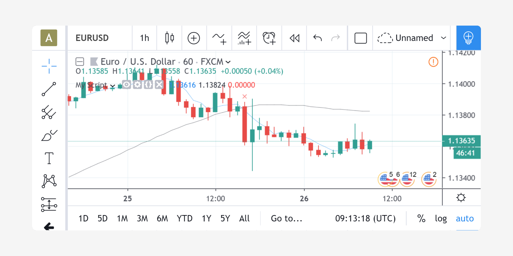

Execution model¶
The execution model of the Pine Script® runtime is intimately linked to Pine Script®’s time series and type system. Understanding all three is key to making the most of the power of Pine Script®.
The execution model determines how your script is executed on charts, and thus how the code you write in scripts works. Your code would do nothing were it not for Pine Script®’s runtime, which kicks in after your code has compiled and it is executed on your chart because one of the events triggering the execution of a script has occurred.
When a Pine script is loaded on a chart it executes once on each historical bar using the available OHLCV (open, high, low, close, volume) values for each bar. Once the script’s execution reaches the rightmost bar in the dataset, if trading is currently active on the chart’s symbol, then Pine Script® indicators will execute once every time an update occurs, i.e., price or volume changes. Pine Script® strategies will by default only execute when the rightmost bar closes, but they can also be configured to execute on every update, like indicators do.
All symbol/timeframe pairs have a dataset comprising a limited number of bars. When you scroll a chart to the left to see the dataset’s earlier bars, the corresponding bars are loaded on the chart. The loading process stops when there are no more bars for that particular symbol/timeframe pair or the maximum number of bars your account type permits has been loaded. You can scroll the chart to the left until the very first bar of the dataset, which has an index value of 0 (see bar_index).
When the script first runs on a chart, all bars in a dataset are historical bars, except the rightmost one if a trading session is active. When trading is active on the rightmost bar, it is called the realtime bar. The realtime bar updates when a price or volume change is detected. When the realtime bar closes, it becomes an elapsed realtime bar and a new realtime bar opens.
Calculation based on historical bars¶
Let’s take a simple script and follow its execution on historical bars:
//@version=5
indicator("My Script", overlay = true)
src = close
a = ta.sma(src, 5)
b = ta.sma(src, 50)
c = ta.cross(a, b)
plot(a, color = color.blue)
plot(b, color = color.black)
plotshape(c, color = color.red)
On historical bars, a script executes at the equivalent of the bar’s close, when the OHLCV values are all known for that bar.
Prior to execution of the script on a bar, the built-in variables such as
open, high, low, close, volume and time are set to values corresponding to those from that bar.
A script executes once per historical bar.
Our example script is first executed on the very first bar of the dataset at index 0. Each statement is executed using the values for the current bar. Accordingly, on the first bar of the dataset, the following statement:
src = close
initializes the variable src with the close value for that first bar, and each of the next lines is executed in turn.
Because the script only executes once for each historical bar, the script will always calculate using the same close value for a specific historical bar.
The execution of each line in the script produces calculations which in turn generate the indicator’s output values,
which can then be plotted on the chart. Our example uses the plot and plotshape calls at the end of the script to output some values.
In the case of a strategy, the outcome of the calculations can be used to plot values or dictate the orders to be placed.
After execution and plotting on the first bar, the script is executed on the dataset’s second bar, which has an index of 1. The process then repeats until all historical bars in the dataset are processed and the script reaches the rightmost bar on the chart.
Calculation based on realtime bars¶
The behavior of a Pine script on the realtime bar is very different than on historical bars.
Recall that the realtime bar is the rightmost bar on the chart when trading is active on the chart’s symbol.
Also, recall that strategies can behave in two different ways in the realtime bar.
By default, they only execute when the realtime bar closes, but the calc_on_every_tick parameter of the
strategy declaration statement can be set to true to modify the strategy’s behavior so that it executes each time the realtime bar updates, as indicators do.
The behavior described here for indicators will thus only apply to strategies using calc_on_every_tick=true.
The most important difference between execution of scripts on historical and realtime bars is that while they execute only once on historical bars,
scripts execute every time an update occurs during a realtime bar. This entails that built-in variables such as high, low and close which never change on a historical bar, can change at each of a script’s iteration in the realtime bar. Changes in the built-in variables used in the script’s calculations will, in turn, induce changes in the results of those calculations. This is required for the script to follow the realtime price action. As a result, the same script may produce different results every time it executes during the realtime bar.
Note: In the realtime bar, the close variable always represents the current price.
Similarly, the high and low built-in variables represent the highest high and lowest low reached since the realtime bar’s beginning.
Pine Script®’s built-in variables will only represent the realtime bar’s final values on the bar’s last update.
Let’s follow our script example in the realtime bar.
When the script arrives on the realtime bar it executes a first time. It uses the current values of the built-in variables to produce a set of results and plots them if required. Before the script executes another time when the next update happens, its user-defined variables are reset to a known state corresponding to that of the last commit at the close of the previous bar. If no commit was made on the variables because they are initialized every bar, then they are reinitialized. In both cases their last calculated state is lost. The state of plotted labels and lines is also reset. This resetting of the script’s user-defined variables and drawings prior to each new iteration of the script in the realtime bar is called rollback. Its effect is to reset the script to the same known state it was in when the realtime bar opened, so calculations in the realtime bar are always performed from a clean state.
The constant recalculation of a script’s values as price or volume changes in the realtime bar
can lead to a situation where variable c in our example becomes true because a cross has occurred,
and so the red marker plotted by the script’s last line would appear on the chart.
If on the next price update the price has moved in such a way that the close value
no longer produces calculations making c true because there is no longer a cross, then the marker previously plotted will disappear.
When the realtime bar closes, the script executes a last time. As usual, variables are rolled back prior to execution. However, since this iteration is the last one on the realtime bar, variables are committed to their final values for the bar when calculations are completed.
To summarize the realtime bar process:
- A script executes at the open of the realtime bar and then once per update.
- Variables are rolled back before every realtime update.
- Variables are committed once at the closing bar update.
Events triggering the execution of a script¶
A script is executed on the complete set of bars on the chart when one of the following events occurs:
- A new symbol or timeframe is loaded on a chart.
- A script is saved or added to the chart, from the Pine Script® Editor or the chart’s “Indicators & strategies” dialog box.
- A value is modified in the script’s “Settings/Inputs” dialog box.
- A value is modified in a strategy’s “Settings/Properties” dialog box.
- A browser refresh event is detected.
A script is executed on the realtime bar when trading is active and:
- One of the above conditions occurs, causing the script to execute on the open of the realtime bar, or
- The realtime bar updates because a price or volume change was detected.
Note that when a chart is left untouched when the market is active, a succession of realtime bars which have been opened and then closed will trail the current realtime bar. While these elapsed realtime bars will have been confirmed because their variables have all been committed, the script will not yet have executed on them in their historical state, since they did not exist when the script was last run on the chart’s dataset.
When an event triggers the execution of the script on the chart and causes it to run on those bars which have now become historical bars, the script’s calculation can sometimes vary from what they were when calculated on the last closing update of the same bars when they were realtime bars. This can be caused by slight variations between the OHLCV values saved at the close of realtime bars and those fetched from data feeds when the same bars have become historical bars. This behavior is one of the possible causes of repainting.
More information¶
- The built-in
barstate.*variables provide information on the type of bar or the event where the script is executing. The page where they are documented also contains a script that allows you to visualize the difference between elapsed realtime and historical bars, for example. - The Strategies page explains the details of strategy calculations, which are not identical to those of indicators.
Historical values of functions¶
Every function call in Pine leaves a trail of historical values that a script can access on subsequent bars using the [] operator. The historical series of functions depend on successive calls to record the output on every bar. When a script does not call functions on each bar, it can produce an inconsistent history that may impact calculations and results, namely when it depends on the continuity of their historical series to operate as expected. The compiler warns users in these cases to make them aware that the values from a function, whether built-in or user-defined, might be misleading.
To demonstrate, let’s write a script that calculates the index of the current bar and outputs that value on every second bar. In the following script, we’ve defined a calcBarIndex() function that adds 1 to the previous value of its internal index variable on every bar. The script calls the function on each bar that the condition returns true on (every other bar) to update the customIndex value. It plots this value alongside the built-in bar_index to validate the output:
//@version=5
indicator("My script")
//@function Calculates the index of the current bar by adding 1 to its own value from the previous bar.
// The first bar will have an index of 0.
calcBarIndex() =>
int index = na
index := nz(index[1], replacement = -1) + 1
//@variable Returns `true` on every other bar.
condition = bar_index % 2 == 0
int customIndex = na
// Call `calcBarIndex()` when the `condition` is `true`. This prompts the compiler to raise a warning.
if condition
customIndex := calcBarIndex()
plot(bar_index, "Bar index", color = color.green)
plot(customIndex, "Custom index", color = color.red, style = plot.style_cross)
Note that:
- The nz() function replaces na values with a specified
replacementvalue (0 by default). On the first bar of the script, when theindexseries has no history, the na value is replaced with -1 before adding 1 to return an initial value of 0.
Upon inspecting the chart, we see that the two plots differ wildly. The reason for this behavior is that the script called calcBarIndex() within the scope of an if structure on every other bar, resulting in a historical output inconsistent with the bar_index series. When calling the function once every two bars, internally referencing the previous value of index gets the value from two bars ago, i.e., the last bar the function executed on. This behavior results in a customIndex value of half that of the built-in bar_index.
To align the calcBarIndex() output with the bar_index, we can move the function call to the script’s global scope. That way, the function will execute on every bar, allowing its entire history to be recorded and referenced rather than only the results from every other bar. In the code below, we’ve defined a globalScopeBarIndex variable in the global scope and assigned it to the return from calcBarIndex() rather than calling the function locally. The script sets the customIndex to the value of globalScopeBarIndex on the occurrence of the condition:
//@version=5
indicator("My script")
//@function Calculates the index of the current bar by adding 1 to its own value from the previous bar.
// The first bar will have an index of 0.
calcBarIndex() =>
int index = na
index := nz(index[1], replacement = -1) + 1
//@variable Returns `true` on every second bar.
condition = bar_index % 2 == 0
globalScopeBarIndex = calcBarIndex()
int customIndex = na
// Assign `customIndex` to `globalScopeBarIndex` when the `condition` is `true`. This won't produce a warning.
if condition
customIndex := globalScopeBarIndex
plot(bar_index, "Bar index", color = color.green)
plot(customIndex, "Custom index", color = color.red, style = plot.style_cross)
This behavior can also radically impact built-in functions that reference history internally. For example, the ta.sma() function references its past values “under the hood”. If a script calls this function conditionally rather than on every bar, the values within the calculation can change significantly. We can ensure calculation consistency by assigning ta.sma() to a variable in the global scope and referencing that variable’s history as needed.
The following example calculates three SMA series: controlSMA, localSMA, and globalSMA. The script calculates controlSMA in the global scope and localSMA within the local scope of an if structure. Within the if structure, it also updates the value of globalSMA using the controlSMA value. As we can see, the values from the globalSMA and controlSMA series align, whereas the localSMA series diverges from the other two because it uses an incomplete history, which affects its calculations:

//@version=5
indicator("My script")
//@variable Returns `true` on every second bar.
condition = bar_index % 2 == 0
controlSMA = ta.sma(close, 20)
float globalSMA = na
float localSMA = na
// Update `globalSMA` and `localSMA` when `condition` is `true`.
if condition
globalSMA := controlSMA // No warning.
localSMA := ta.sma(close, 20) // Raises warning. This function depends on its history to work as intended.
plot(controlSMA, "Control SMA", color = color.green)
plot(globalSMA, "Global SMA", color = color.blue, style = plot.style_cross)
plot(localSMA, "Local SMA", color = color.red, style = plot.style_cross)
Why this behavior?¶
This behavior is required because forcing the execution of functions on each bar would lead to unexpected results in those functions that produce side effects, i.e., the ones that do something aside from returning the value. For example, the label.new() function creates a label on the chart, so forcing it to be called on every bar even when it is inside of an if structure would create labels where they should not logically appear.
Exceptions¶
Not all built-in functions use their previous values in their calculations, meaning not all require execution on every bar. For example, math.max() compares all arguments passed into it to return the highest value. Such functions that do not interact with their history in any way do not require special treatment.
If the usage of a function within a conditional block does not cause a compiler warning, it’s safe to use without impacting calculations. Otherwise, move the function call to the global scope to force consistent execution. When keeping a function call within a conditional block despite the warning, ensure the output is correct at the very least to avoid unexpected results.